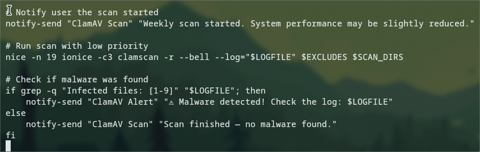

Projects

Python-based password generator supporting strong, customizable passwords for security-focused use cases.

Implemented scheduled antivirus scanning and reporting using Bash scripting in GUI and non-GUI environments
Developed a Python-based tool to analyze login data and detect suspicious patterns using SQL and Bash automation

Built a multi-VM lab to practice Linux/Windows administration, networking, security tools, and troubleshooting scenarios

Learning the building blocks of installing a Linux Operating System by doing Linux from scratch by installing and compiling a Gentoo OS at a Virtual machine (VirtualBox), from zero, to everything.